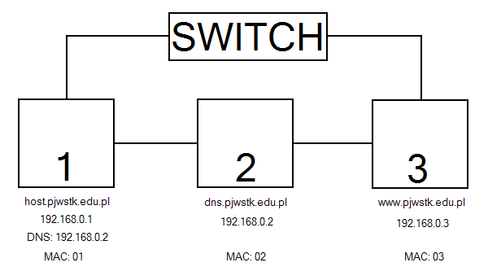

ARP (protokó³ komunikacyjny)
ARP (ang. Address Resolution Protocol) - protokó³ komunikacyjny przekszta³cania adresów IP
(ustalanych autorytarnie przez u¿ytkownika/administratora) na fizyczne, 48-bitowe adresy MAC (przypisane fizycznie m.in. do kart sieciowych) w
komputerowych sieciach lokalnych typu Ethernet.
Ka¿dy komputer w sieci powinien posiadaæ tzw. tablicê ARP. Znajduje siê w niej adres IP i przypisany do niego adres MAC. Dziêki temu komputery mog± siê ze sob±
komunikowaæ za po¶rednictwem adresu MAC, ale tylko w obrêbie danej sieci LAN. Je¶li jakie¶ informacje maj± byæ przes³ane do innej sieci (lub podsieci w sieci
z³o¿onej, sieci oddzielonej routerem, itp.), to adres MAC musi byæ zast±piony adresem IP.
ARP jest protoko³em pracuj±cym na drugiej warstwie modelu ISO/OSI, czyli warstwie ³±cza danych, poniewa¿ pracuje ona na ramkach i mo¿e je analizowaæ tzn.
np. sprawdzaæ ich poprawno¶æ.
Zasada dzia³ania:
ARP dzia³a w nastêpuj±cy sposób:
1. Utworzenie pakietu z szukanym adresem IP.
2. Wys³anie pakietu w obrêbie danej sieci.
3. Wys³any pakiet odbieraj± wszystkie hosty pod³±czone do sieci. Jako jedyny odpowiada host o szukanym IP - przesy³a pakiet z odpowiedzi± zawieraj±c± adres MAC.
4. Host szukaj±cy po podebraniu pakietu z szukanym adresem MAC zapisuje go w pamiêci podrêcznej, dziêki czemu nie musi pó¼niej szukaæ jeszcze raz tego samego adresu.
Czêsto po pod³±czeniu do sieci host rozsy³a zapytanie ARP o w³asny adres. Odpowiedzi nie bêdzie (gdy¿ nie mog± by¿ w danej sieci dwa komputery o tym samym IP)
ale ka¿dy inny host mo¿e zapisaæ w pamiêci podrêcznej dane o nowym ho¶cie przy³±czonym do sieci.
Zad. 1
Co siê stanie po wykonaniu komendy:
ping 192.168.1.1
| ¬RÓD£O | IP ¬RÓD£A | CEL | IP CELU | TRE¦Æ |
| MAC: 01 | FF | ARP REQ 192.168.0.254 | ||
| MAC: 02 | MAC: 01 | ARP REP MAC: 02 | ||
| MAC: 01 | 192.168.0.1 | MAC: 02 | 192.168.1.1 | ECHO REQ |
| MAC: 03 | FF | ARP REQ 192.168.1.1 | ||
| MAC: 04 | MAC: 03 | ARP REP MAC: 04 | ||
| MAC: 03 | 192.168.0.1 | MAC: 04 | 192.168.1.1 | ECHO REQ |
| MAC: 04 | 192.168.1.1 | MAC: 03 | 192.168.0.1 | ECHO REP |
| MAC: 02 | 192.168.1.1 | MAC: 01 | 192.168.0.1 | ECHO REP |
REQ = RQ = REQUEST
REP = RP = REPLY
GW = GATEWAY
Zad. 2

Co siê stanie po wykonaniu komendy:
ping www.pjwstk.edu.pl
| ¬RÓD£O | IP ¬RÓD£A | CEL | IP CELU | TRE¦Æ |
| MAC: 01 | FF | ARP REQ 192.168.0.2 | ||
| MAC: 02 | MAC: 01 | ARP REP MAC: 02 | ||
| MAC: 01 | 192.168.0.1 | MAC: 02 | 192.168.0.2 | DNS REQ www.pjwstk.edu.pl |
| MAC: 02 | 192.168.0.2 | MAC: 01 | 192.168.0.1 | DNS REP 192.168.0.3 |
| MAC: 01 | 192.168.0.1 | MAC: 03 | 192.168.0.3 | ECHO REQ |
| MAC: 03 | 192.168.0.3 | MAC: 01 | 192.168.0.1 | ECHO REP |
REQ = RQ = REQUEST
REP = RP = REPLY